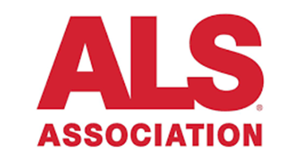
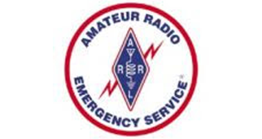

Big Design Conference 2019
Volunteered to gain access to the conference presentations.

SXSW Interactive Track 2019
Volunteered at South by Southwest to receive access to the design related presentations.

ALS Association 2018 & 2019
Volunteered with the ALS Association doing graphic design work and event planning.

Austin Radio Emergency Services 2018 & 2019
Created graphics and logos for the ARES Emergency Response Vehicles.